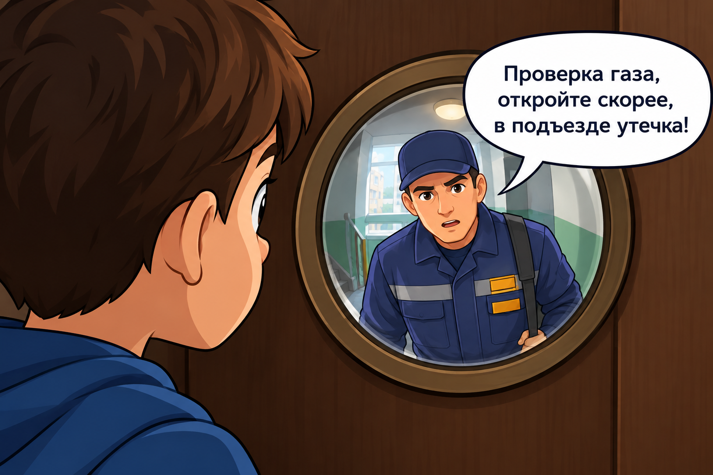

Сюжет первый
Суббота, родители ушли в магазин. Вдруг раздается звонок в дверь. Ты смотришь в глазок — там незнакомый мужчина в спецовке. Он говорит: «Проверка газа, откройте скорее, в подъезде утечка!». Твои действия?
Сказать: «Идите отсюда, я вам не верю!», включить музыку погромче и игнорировать.
❌ Опасно!
Грубить не стоит, но главное — нужно обязательно сообщить родителям, чтобы они проверили, действительно ли была проверка.